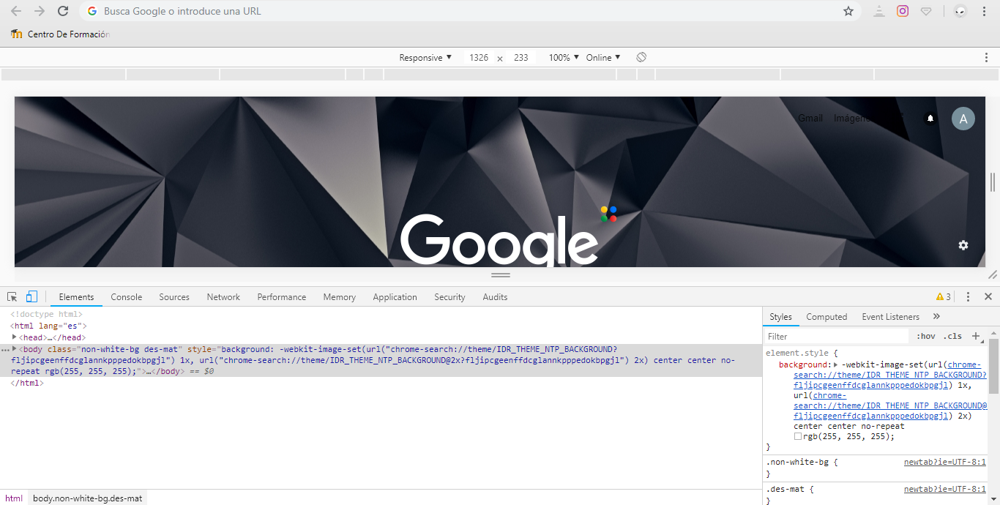

La herramienta de desarrollador "Inspeccionar elemento" te permite identificar con precisión el código HTML de todos los elementos que ves en una página web. El HTML y las hojas de estilo CSS que lo acompañan son completamente editables una vez que has abierto estas herramientas.

- Debugger.
- Pestaña Network.
- Pestaña Elements.
- Pestaña Console.